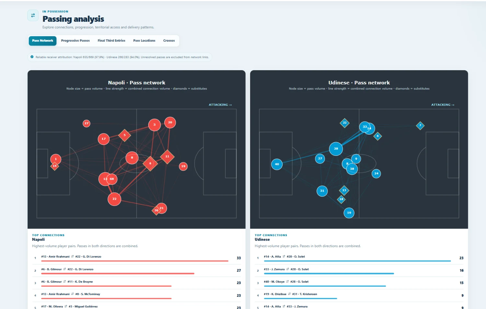

Données réelles de match
655 / 669passes attribuées · Napoli
266 / 283passes attribuées · Udinese
Match Explorer · Data product · 2025
Analyser le match, pas la feuille de calcul.
Développé en Python et Dash, Match Explorer relie event data, métriques tactiques et analyse visuelle dans un environnement interactif pensé autour du véritable workflow d’un match analyst.
- 01Analyse de la construction, progression, pressing, transitions et coups de pied arrêtés.
- 02Navigation entre vues équipe, contexte du match et preuves au niveau joueur.
- 03Des outputs conçus pour raconter clairement le pré-match et le post-match.
PythonDashPlotlySQL
Voir le projet sur GitHub